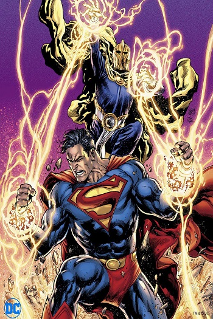
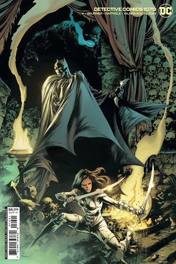
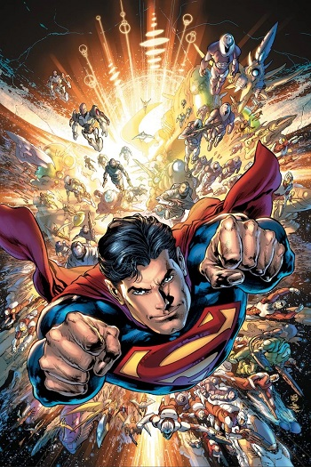

Ivan Reis
Ivan Reis is a Brazilian comics artist. He is known for his work on comic books such as Dark Horse Comics' Ghost, Marvel Comics' Captain Marvel and Avengers Icons: The Vision and DC Comics' Action Comics, Green Lantern and Aquaman series. According to collaborator Geoff Johns, Reis's drawing style resembles those of Alan Davis and Neal Adams.For three years, Reis worked for Maurício de Sousa in Brazil. He began his international career for Dark Horse Comics working on Ghost, starting with issue #17 and acting as regular artist until the series concluded with issue #36. Other work for Dark Horse included The Mask, Time Cop, and Xena. He later worked for Lightning Comics.


